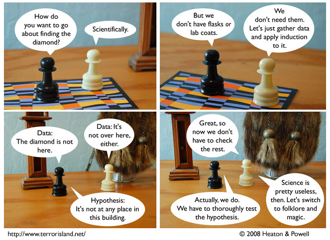

Strip #311
— Friday, June 6, 2008
Induction is easier to apply than unicorn horns but harder than hypno-kits.
Notes, Thoughts, &c.
Ben’s Notes
We have a Bonobo Conspiracy guest strip up today.
Lewis’s Notes
Pro-science people, I know you are all going to be up in arms about this, and I apologize for the strip taking a stance you might find offensive. Please, though, bear with us while we go through this storyline, you might find you enjoy it even though it has a sort of anti-science stance. Maybe it will even change your minds, you never know.